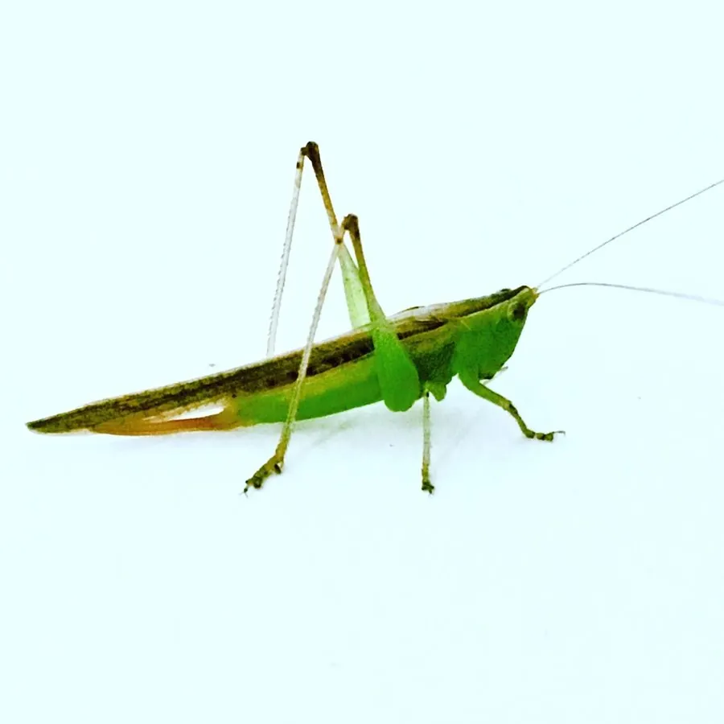

昆虫 · 动物界
草螽 Conocephalus maculatus

体形细长的绿色螽斯，前翅较短、尾端尖，栖息在草丛中，雄虫以细弱的鸣声求偶，是草地常见的小型螽斯。
- 分类
- 门节肢动物门纲昆虫纲目直翅目科螽斯科属草螽属
- 栖息环境
- 草地、稻田、灌丛和路旁杂草丛
- 地理分布
- 中国大部分地区，以及日本、东南亚
- 保护级别
- 暂无评估
物种志
草螽成虫体长 18–25 mm，体形细长，通体草绿或黄绿色，体侧常有一条褐色纵带。前翅较短，末端尖锐，超过腹部末端不多；后足细长，善于跳跃；雌虫腹末有短而弯的产卵器，雄虫腹末有尾须。
草螽分布于中国大部分地区以及日本、东南亚，生活在草地、稻田、灌丛和路旁杂草中，是草地生态系统里最常见的螽斯之一。它以禾本科植物的叶片和嫩穗为食，偶尔也取食小型昆虫。雄虫在夏秋季节鸣叫求偶，鸣声细弱而连续，像轻微的“吱”声，常被环境噪音掩盖。雌虫把卵产在禾草的茎秆内，卵在茎内越冬。草螽也是鸟类、蜥蜴和蜘蛛的食物，在食物链中同时扮演初级消费者和猎物的角色。
形态与习性
- 食性取食禾本科植物叶片和嫩穗，偶尔捕食小虫
- 体长18–25 mm
- 鸣声雄虫夏秋鸣叫，声音细弱连续
- 产卵雌虫把卵产在禾草茎秆内越冬
- 体色草绿色，体侧常有一条褐色纵带
- 天敌鸟类、蜥蜴和蜘蛛
趣味知识
- 草螽的鸣声非常细弱，常被风声和虫鸣掩盖，需要靠近才能听见。
- 雌虫把卵一粒粒插进禾草的茎秆里，卵就在茎内越冬。
- 它既吃植物也偶尔捕食小虫，属于杂食性的螽斯。